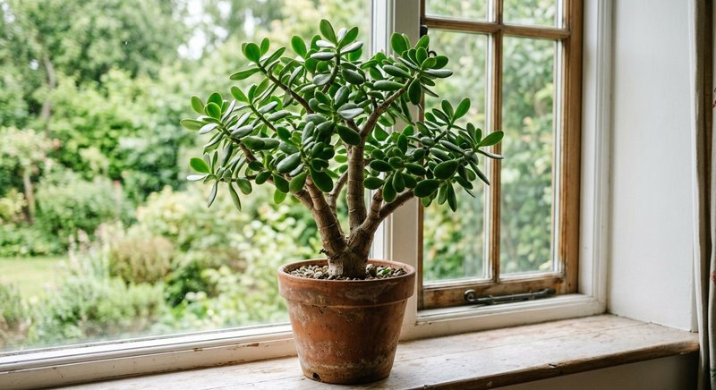

Виды растений · 4 мин чтения
Удобрение для толстянки: как подкармливать денежное дерево дома
Толстянка запасает воду в листьях и стеблях, поэтому главные риски для неё — перелив и лишний раствор в мокром субстрате. Подкормка нужна только здоровому растению в период роста.
Материал обновлён 24.10.2026 · Справочная информация, не заменяет инструкцию на упаковке.

Суккуленту сначала нужен свет и сухой ритм полива
При слабом свете толстянка вытягивает побеги, листья располагаются реже, а стволик хуже держит крону. Удобрение не сделает вытянувшийся стебель снова компактным. Растению нужен яркий свет с постепенным привыканием к прямому солнцу после тёмной зимовки. Поворачивайте горшок небольшими шагами, чтобы крона не наклонялась только к окну.
Между поливами субстрату дают хорошо просохнуть с учётом его состава и размера горшка. Толстые листья позволяют пережить паузу, но не защищают корни от постоянной сырости. Если листья мягкие при мокром грунте, не поливайте ещё: проверьте сток и корневую шейку. Питательный раствор в этот момент не решает проблему.
Горшок и субстрат: почему дренаж важнее формулы
Толстянке подходит ёмкость с отверстиями и субстрат, который не превращается в плотную мокрую массу. Слишком большой горшок после пересадки долго просыхает вокруг сравнительно небольшой корневой системы. Увеличивайте объём умеренно и не заглубляйте растение выше прежнего уровня без необходимости. Декоративное кашпо без стока требует обязательного слива воды после полива.
Если грунт слежался, вода проходит по стенкам, а центр остаётся сухим или, наоборот, ком долго пахнет сыростью, пересадка важнее смены удобрения. После пересадки первую подкормку определяют по заправке смеси и этикетке средства; общий порядок собран в статье о питании после пересадки.
- субстрат заметно просох после предыдущего полива;
- листья плотные, стволик у основания не мягкий;
- горшок имеет сток и не стоит в воде;
- растение выпускает новые листья при ярком свете;
- после пересадки учтено питание свежего грунта.
Как подкармливать толстянку без перекорма
Используйте удобрение, подходящее комнатным растениям, строго в норме производителя. Не вносите раствор в мокрый холодный субстрат и не повторяйте дозу, если рост медленный из-за зимы. Для суккулента предсказуемая редкая схема по этикетке безопаснее попыток стимулировать каждый полив. Расчёт концентрата на малый объём воды сверяйте с руководством как развести жидкое удобрение.
Семяздрав позиционируется продавцом для комнатных растений и цветов; применение к толстянке определяйте по актуальной этикетке. Не смешивайте его с отдельным удобрением для кактусов в один период без понятного суммарного графика. Если растение только куплено или недавно пересажено, сначала дайте ему адаптироваться к свету и поливу.
Мягкие листья и листопад: сначала диагностика, не удобрение
Сморщенные листья при сухом лёгком горшке могут говорить о долгом перерыве в поливе. Мягкие полупрозрачные листья при мокром субстрате и мягкое основание стебля — более тревожная картина, связанная с корнями. В обоих случаях удобрение не является первым шагом. Сначала определите фактическую влажность на глубине, проверьте дренаж и запах, затем стабилизируйте режим.
Массовый листопад бывает после резкой перестановки, холодного сквозняка и смены полива. Не пытайтесь компенсировать его внеплановой дозой. Последовательность проверки из статьи о признаках нехватки питания поможет отделить реальный дефицит от стресса. Если ухудшение началось после крепкого раствора, проверьте признаки перекорма.
Обрезка, формирование и сезонная пауза
Компактную крону формируют светом и аккуратной обрезкой здоровых побегов, а не удобрением. После обрезки растению дают восстановиться; срезы и черенки не обрабатывают концентратом. Укореняемые черенки сначала должны образовать корни в подходящем субстрате, а плановое питание начинают только по инструкции после укоренения и с учётом состава смеси.
Зимой при коротком дне толстянка расходует мало воды. Сокращение полива и питания в этот период естественнее попыток поддерживать летний график. Весной возвращение к подкормкам связывают с новым приростом и увеличением света. Записывайте даты полива и внесения: для суккулента редкие события легко забыть и случайно повторить слишком рано.
Если толстянка наклонилась к окну, поворачивайте её постепенно и проверяйте устойчивость горшка: тяжёлая крона в лёгкой пластиковой ёмкости может опрокинуться. Опору или более устойчивое кашпо подбирают без пересадки в чрезмерно большой объём.
Частые вопросы
Как часто удобрять денежное дерево?
Только по инструкции выбранного средства в активный рост. Толстянка не нуждается в стимуляции при каждом поливе, особенно зимой.
Можно ли подкармливать толстянку зимой?
Если растение почти не растёт при коротком дне, плановое питание обычно ставят на паузу или сокращают по этикетке. Под полноценной досветкой ориентируются на фактический прирост.
Почему у толстянки мягкие листья?
При сухом субстрате возможна жажда, при мокром — повреждение корней. Сначала проверьте влажность и основание стебля; удобрение не является первым действием.
Нужно ли отдельное удобрение для суккулентов?
Не обязательно, если выбранное средство подходит комнатным растениям и применяется по норме. Важнее не переливать и не накладывать несколько схем одновременно.